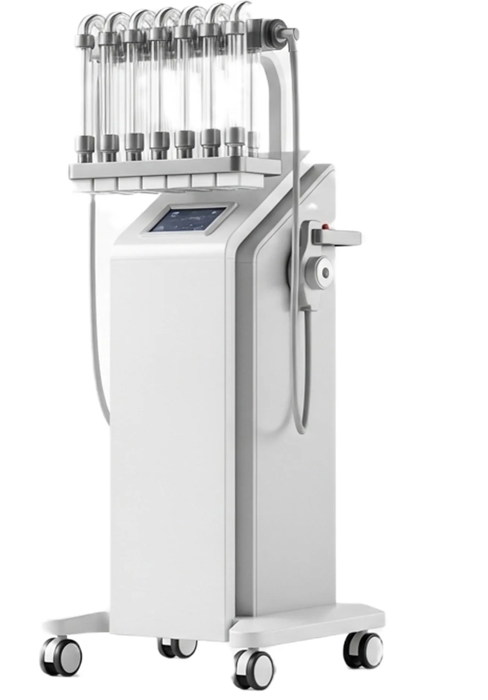
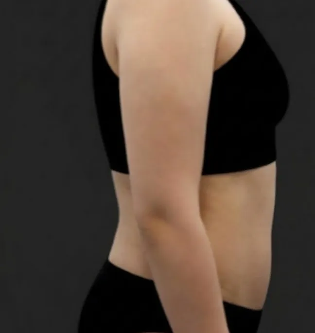
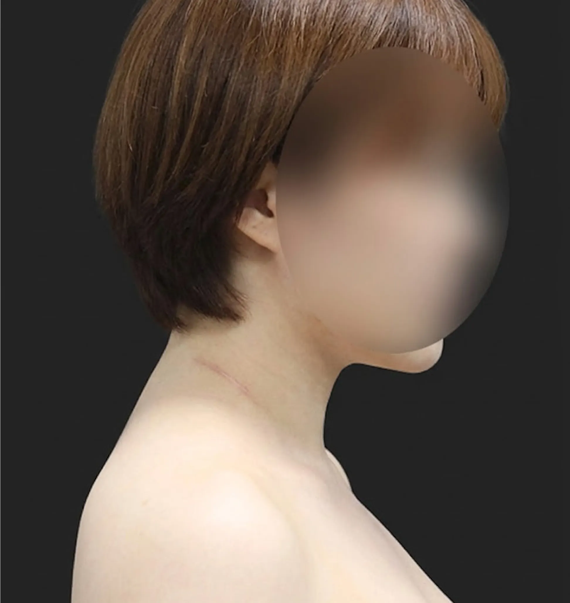
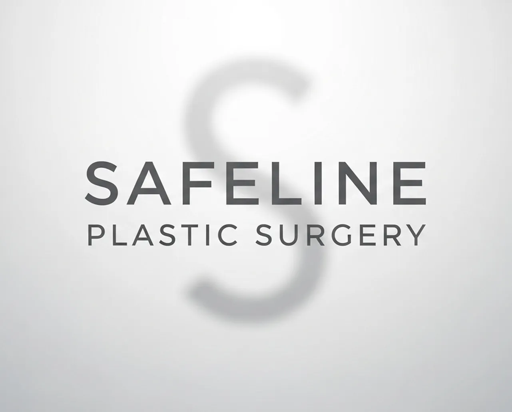
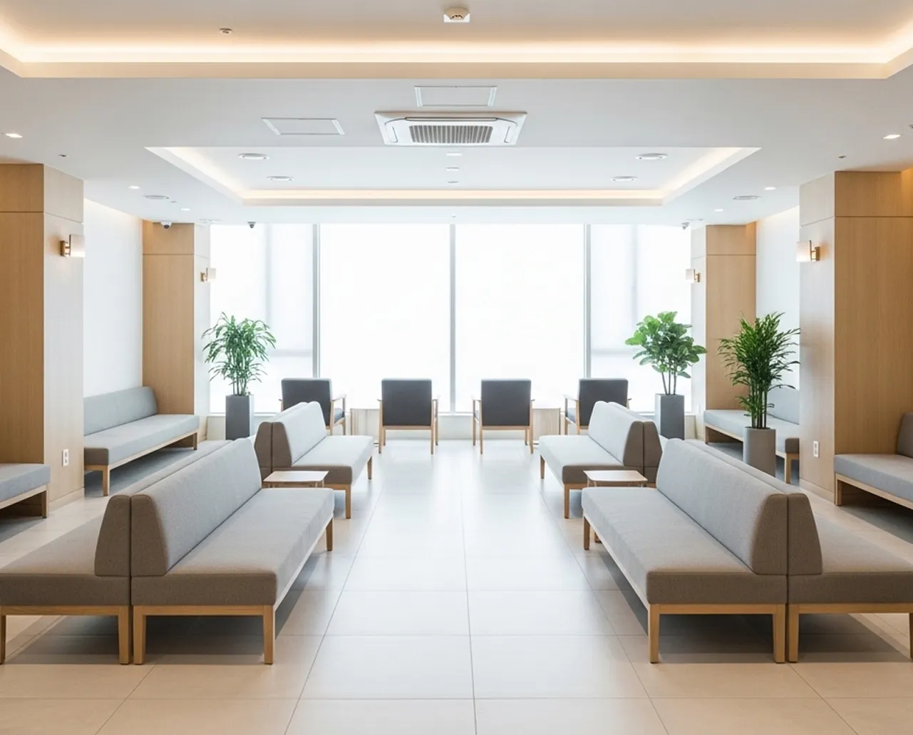

핸드메이드
×
흡입장비
리포섹션머신
정교한 기술이 완벽한 라인을 만듭니다
넘치는지방 싹빼고
골반
볼륨은 채워서 허리라인 까지만드는
대용량 흡입으로 여리한 팔 라인과 뒤태를 한번에
부위별 팔 등 지방 흡입
불필요한 지방으로 두꺼워 보이는
팔뚝 라인을 정리해 슬림하고 길어보이는
실루엣을 완성합니다.

가슴과 겨드랑이 사이로 불룩 튀어나온
부유방을 자연스럽게 정돈해 상체 라인을
균형 있게 잡아줍니다..

겨드랑이 앞.뒤 라인의 불균형한
지방을 정리해 팔과 상체가 연결되는 라인을
매끄럽게 교정합니다.

브라 착용 시 접히거나 튀어나오는 부분을
다듬어 뒤쪽 라인이 깔끔하고 단정하게
떨어지도록 정리합니다.

접히는 볼륨과 울퉁한 등 라인을 정돈해
부드럽고 곧은 실루엣을 되찾아줍니다.
세이프라인 첨단 의료 시스템

지방성형
20,000
+
지방흡입재수술
3,300
+
두상필러
1,600
+
지방성형만 2만여건 이상의 시술을 집도하며 끊임없이 연구하고 노하우를 발전시켜 최상의 결과를 보여드립니다.
박준성 대표원장

 BEFORE
BEFORE
 AFTER
AFTER
 BEFORE
BEFORE

AFTER BEFORE
BEFORE

AFTER





FAQ
이곳에 답변 내용을 입력하세요.
이곳에 답변 내용을 입력하세요.
이곳에 답변 내용을 입력하세요.
처음부터 끝까지 흐트러짐 없는 라인을 만드는데 집중합니다.